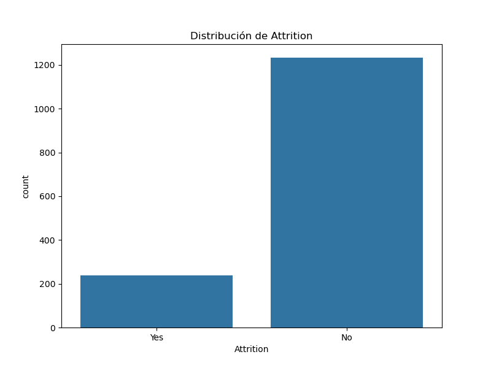
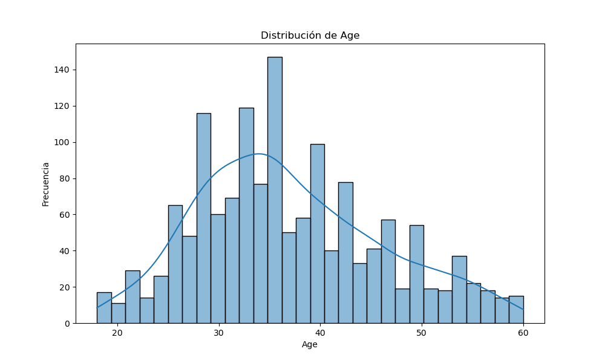
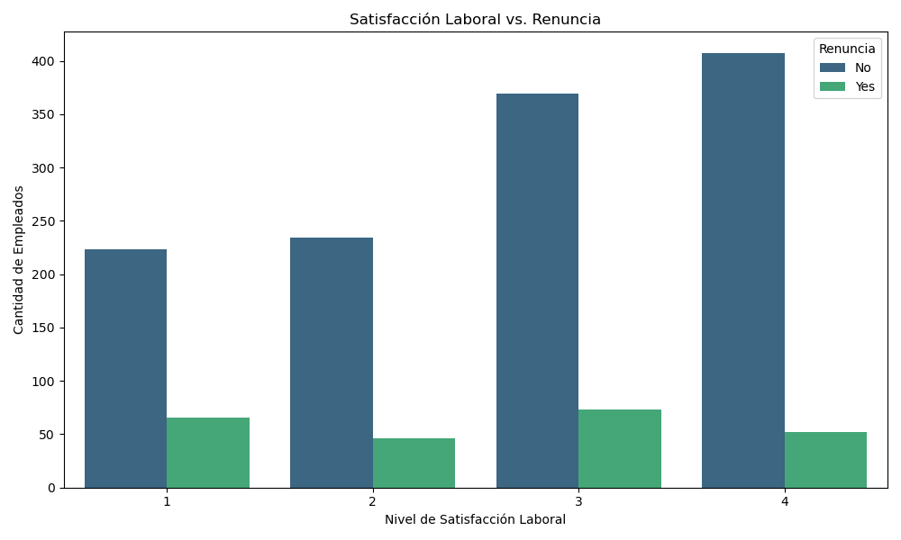
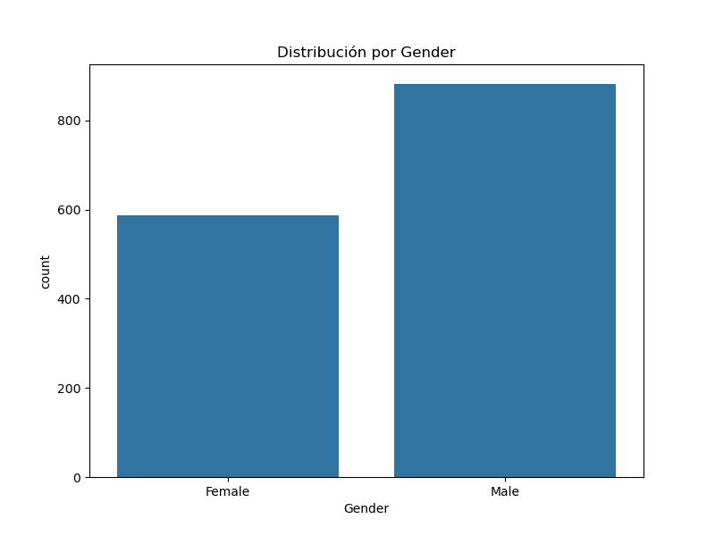
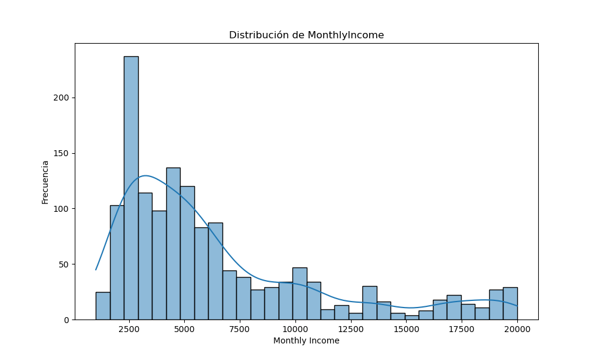
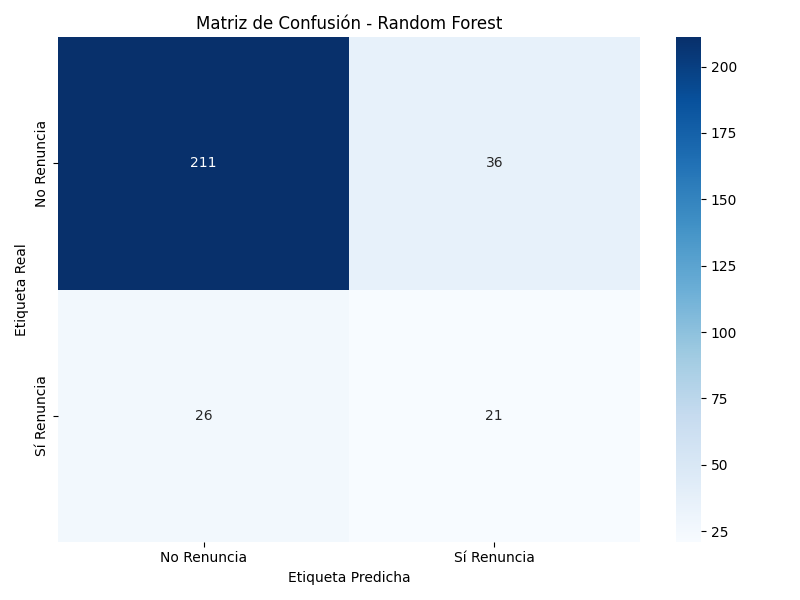
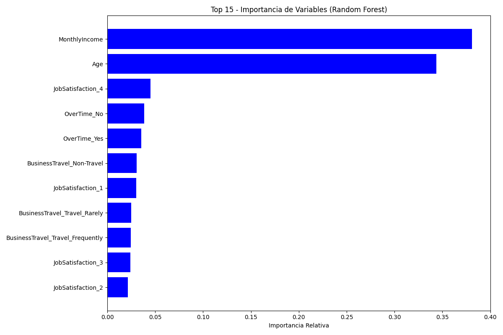
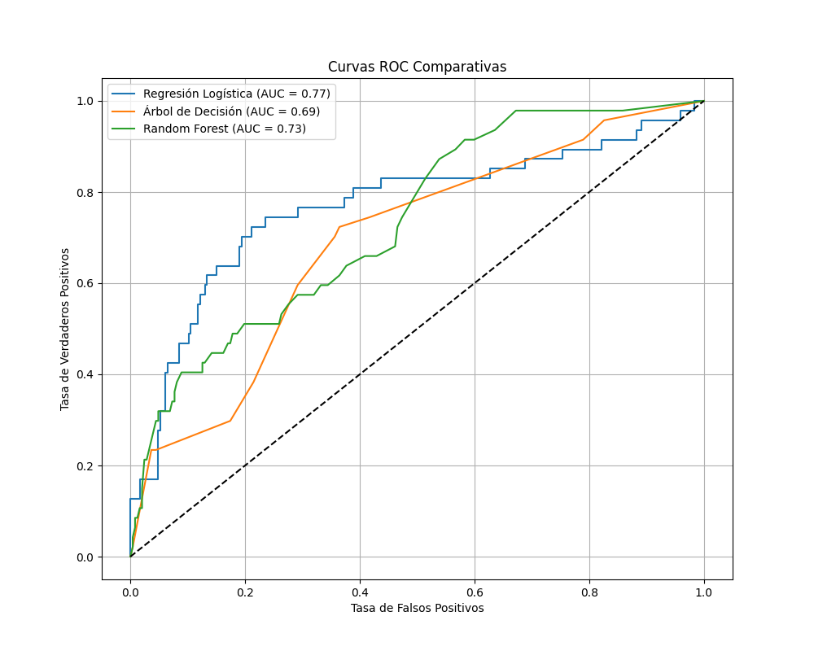

Análisis de Rotación de Empleados
Total de Empleados
1470
Tasa de Rotación
16.12%
Edad Promedio
36.92
Ingreso Mensual Promedio
$6,502.93
Distribución de Rotación (Attrition)
Distribución de Edad
Satisfacción Laboral vs. Renuncia
Distribución por Género
Distribución de Ingreso Mensual
Esta fase inicial es crucial para alinear el proyecto de minería de datos con las metas de la organización. Se centra en entender el problema desde una perspectiva de negocio antes de sumergirse en los datos.
El objetivo principal de la empresa es reducir la tasa de rotación de empleados (attrition). La pérdida de talento no solo implica costos directos de reclutamiento y capacitación, sino que también afecta la moral del equipo, la continuidad del conocimiento y la productividad general.
- Objetivo Primario: Disminuir la rotación voluntaria en un 15% durante el próximo año fiscal.
- Objetivos Secundarios:
- Mejorar la satisfacción y el clima laboral.
- Optimizar los procesos de gestión de recursos humanos.
- Aumentar la retención de empleados con alto desempeño.
Se realiza un inventario de recursos, riesgos, y un análisis costo-beneficio.
- Recursos: Se cuenta con un dataset histórico de 1470 empleados y 35 variables, además de las herramientas de software (Python y sus librerías) y el personal técnico para el análisis.
- Riesgos: El dataset podría carecer de variables cruciales no registradas (ej. calidad de la gestión directa, conflictos interpersonales). Las conclusiones estarán limitadas a los datos disponibles.
- Análisis Costo-Beneficio:
- Costos: Horas de análisis, tiempo del personal de RRHH para validar hallazgos e implementar soluciones.
- Beneficios: Un ahorro sustancial. Se estima que el costo de reemplazar a un empleado puede ser entre el 50% y 200% de su salario anual. Una pequeña reducción en la rotación puede justificar con creces la inversión en este análisis.
Se traducen los objetivos de negocio a metas técnicas y medibles.
- Objetivo Técnico Principal: Construir un modelo de clasificación que prediga si un empleado renunciará (
Attrition = Yes) o no.- Criterio de Éxito: El modelo debe alcanzar una precisión (Accuracy) global superior al 85% y, más importante aún, una sensibilidad (Recall) para la clase 'Yes' de al menos el 70%. Esto asegura que identificamos a la mayoría de los empleados en riesgo.
- Objetivo Técnico Secundario: Identificar y clasificar en orden de importancia los 5 a 7 factores principales que más influyen en la renuncia de los empleados.
En esta fase, realizamos una primera inmersión en los datos. El objetivo es familiarizarnos con su estructura, contenido, calidad y formular las primeras hipótesis sobre las relaciones entre las variables.
2.1 Recolección y Descripción Inicial
- Fuente de Datos: La información proviene del archivo
WA_Fn-UseC_-HR-Employee-Attrition (1).csv. - Dimensiones: El conjunto de datos consta de 1470 registros (empleados) y 35 características (columnas).
- Tipos de Datos: Como se vio en el EDA, los datos son una mezcla de variables numéricas (ej.
Age,MonthlyIncome) y categóricas (ej.Department,Gender).
2.2 Hipótesis Iniciales sobre Variables Clave
Basándonos en el conocimiento del problema, podemos formular algunas hipótesis iniciales sobre qué factores podrían influir en la rotación de empleados. Estas hipótesis guiarán nuestro análisis más profundo.
| Columna | ¿Cómo podría ayudar a predecir la renuncia? |
|---|---|
Age |
Las personas más jóvenes podrían tener una mayor tendencia a rotar en busca de nuevas oportunidades. |
MonthlyIncome |
Salarios percibidos como bajos pueden ser un fuerte incentivo para buscar empleo en otro lugar. |
BusinessTravel |
La frecuencia alta de viajes de negocio puede generar desgaste y desequilibrio con la vida personal. |
JobSatisfaction |
Una baja satisfacción laboral es un indicador directo de descontento, lo que podría llevar a la renuncia. |
OverTime |
El exceso de horas extra de forma recurrente puede causar agotamiento (burnout) y motivar la salida. |
Las visualizaciones en la pestaña Inicio (EDA), como la de "Satisfacción Laboral vs. Renuncia", ya nos permiten empezar a validar estas ideas.
2.3 Verificación de la Calidad de los Datos
- Valores Nulos: Un hallazgo muy positivo es que el dataset está completo; no se encontraron valores nulos en ninguna columna. Esto simplificará enormemente la siguiente fase de preparación de datos.
- Consistencia: En una revisión preliminar, los valores de las columnas parecen consistentes y dentro de rangos lógicos. Por ejemplo, la columna
StandardHourstiene un valor constante de 80 para todos los empleados, lo que indica que podría no ser una variable útil para el modelo, algo a confirmar en la siguiente fase.
Esta es la fase más intensiva y crucial. Aquí se limpian y transforman los datos brutos para que puedan ser utilizados por los algoritmos de machine learning. Un modelo es tan bueno como los datos con los que se entrena.
Diccionario de Variables
A continuación se detallan las variables del dataset:
| Variable Original | Nombre en Español | Definición |
|---|---|---|
| Age | Edad | Edad del empleado. |
| Attrition | Renuncia | Si el empleado renunció (Yes) o no (No). |
| BusinessTravel | Frecuencia de Viajes | Con qué frecuencia viaja el empleado por negocios. |
| DailyRate | Tarifa Diaria | Tarifa salarial por día. |
| Department | Departamento | Departamento del empleado. |
| DistanceFromHome | Distancia Casa-Trabajo | Distancia en km desde el hogar al trabajo. |
| Education | Nivel Educativo | Nivel de educación (1 'Bajo' a 5 'Doctorado'). |
| EducationField | Campo de Estudio | Campo de estudio del empleado. |
| EmployeeCount | Conteo de Empleados | Siempre es 1. |
| EmployeeNumber | Número de Empleado | Identificador único del empleado. |
| EnvironmentSatisfaction | Satisfacción Ambiental | Nivel de satisfacción con el ambiente de trabajo. |
| Gender | Género | Género del empleado. |
| HourlyRate | Tarifa por Hora | Tarifa salarial por hora. |
| JobInvolvement | Implicación Laboral | Nivel de implicación en el trabajo. |
| JobLevel | Nivel del Puesto | Nivel jerárquico del puesto (1 a 5). |
| JobRole | Rol Laboral | Rol o cargo específico del empleado. |
| JobSatisfaction | Satisfacción Laboral | Nivel de satisfacción con el trabajo. |
| MaritalStatus | Estado Civil | Estado civil del empleado. |
| MonthlyIncome | Ingreso Mensual | Ingreso mensual del empleado. |
| MonthlyRate | Tarifa Mensual | Tarifa mensual (no confundir con salario). |
| NumCompaniesWorked | Nº Empresas Anteriores | Número de empresas en las que ha trabajado antes. |
| Over18 | Mayor de 18 | Si el empleado es mayor de 18 años (siempre 'Y'). |
| OverTime | Horas Extra | Si el empleado trabaja horas extra (Yes/No). |
| PercentSalaryHike | % Aumento Salarial | Porcentaje de aumento salarial del último año. |
| PerformanceRating | Calificación de Desempeño | Calificación del desempeño del empleado. |
| RelationshipSatisfaction | Satisfacción Relaciones | Nivel de satisfacción con las relaciones interpersonales. |
| StandardHours | Horas Estándar | Horas de trabajo estándar (siempre 80). |
| StockOptionLevel | Nivel de Opciones sobre Acciones | Nivel de opciones sobre acciones de la empresa. |
| TotalWorkingYears | Años de Experiencia Total | Años totales de experiencia laboral. |
| TrainingTimesLastYear | Horas Formación (Año Pasado) | Número de cursos de formación el último año. |
| WorkLifeBalance | Equilibrio Vida-Trabajo | Nivel de equilibrio entre vida personal y laboral. |
| YearsAtCompany | Años en la Empresa | Años que el empleado lleva en la empresa actual. |
| YearsInCurrentRole | Años en el Rol Actual | Años en el puesto de trabajo actual. |
| YearsSinceLastPromotion | Años desde Última Promoción | Años desde la última promoción. |
| YearsWithCurrManager | Años con Manager Actual | Años con el mismo manager. |
Eliminación de Variables sin Señal
Algunas variables no aportan información útil para un modelo de predicción porque no varían entre los empleados. Estas columnas serán eliminadas.
| Variable | Razón para Eliminar |
|---|---|
EmployeeCount | El valor es constante (1) para todos los registros. No tiene poder predictivo. |
StandardHours | El valor es constante (80) para todos los registros. No permite diferenciar empleados. |
Over18 | El valor es constante ('Y') para todos los registros. No aporta información. |
EmployeeNumber | Es un identificador único. No contiene información generalizable para predecir la renuncia en futuros empleados. |
Paso 1: Limpieza y Eliminación de Variables
La primera acción es simplificar el dataset.
- Datos Nulos: Se confirma que no existen valores nulos, por lo que no es necesario aplicar técnicas de imputación.
- Eliminación de Variables: Se eliminan las columnas que no aportan valor predictivo, como se identificó en la pestaña "Variables sin Señal". Esto reduce el ruido y la complejidad del modelo.
Paso 2: Feature Engineering
Se crean nuevas variables (features) a partir de las existentes para intentar capturar relaciones más complejas que ayuden al modelo.
Ejemplo: Crear una variable "Ingreso por Año de Experiencia".
| Ingreso Mensual | Años Exp. | Ingreso / Año Exp. |
|---|---|---|
| 5993 | 8 | 749.1 |
| 5130 | 10 | 513.0 |
| 2909 | 8 | 363.6 |
Paso 3: Balanceo de Datos con SMOTE (70-30)
El dataset está desbalanceado (84% 'No' vs 16% 'Yes'). Para evitar que el modelo se vuelva sesgado hacia la clase mayoritaria, se usa SMOTE.
Antes del Balanceo:
- Clase 'No' (Mayoritaria): 1233 registros
- Clase 'Yes' (Minoritaria): 237 registros
Después de SMOTE (Conceptual con balanceo 70-30):
- Clase 'No': 1233 registros
- Clase 'Yes': 370 registros (237 originales + 133 sintéticos)
Paso 4: Escalamiento de Datos
Se estandarizan las variables numéricas para que tengan una media de 0 y una desviación estándar de 1. Esto es crucial para algoritmos sensibles a la escala de los datos.
Ejemplo con StandardScaler:
| Variable | Valor Original | Valor Escalado |
|---|---|---|
| Age | 41 | 0.44 |
| MonthlyIncome | 5993 | -0.10 |
Codificación de Variables Categóricas
Estrategia de Codificación
Se utilizan dos técnicas para convertir texto a números:
- Label Encoding: Para variables binarias (con solo dos categorías), asignando valores de 0 y 1. Se aplica a
Attrition,GenderyOverTime. - One-Hot Encoding: Para variables con más de dos categorías, creando columnas "dummy" para evitar que el modelo asuma un orden inexistente. Se aplica a variables como
BusinessTravel,Department,JobRole, etc.
Consecuencias: Cambio de Dimensionalidad
La codificación expande el dataset. De 31 columnas útiles, el proceso de One-Hot Encoding genera un total de 114 columnas finales, que se usarán para entrenar los modelos.
Análisis de Distribución, Simetría y Datos Atípicos
Se analizan las distribuciones de las variables numéricas más importantes para detectar asimetrías (skewness) y valores atípicos (outliers), ya que pueden influir negativamente en el rendimiento de algunos modelos.
Hallazgos Clave:
- MonthlyIncome (Ingreso Mensual): Muestra una fuerte asimetría positiva (cola larga hacia la derecha). La mayoría de los empleados se concentran en salarios más bajos, y hay unos pocos con salarios muy altos que se consideran datos atípicos.
- TotalWorkingYears (Años de Experiencia): También presenta asimetría positiva y varios datos atípicos, indicando empleados con una vasta trayectoria profesional en comparación con la media.
- YearsAtCompany (Años en la Empresa): Similar a las anteriores, con asimetría positiva y outliers que representan a empleados con mucha antigüedad.
- Age (Edad): Es la variable más simétrica, con una distribución que se asemeja a una normal, aunque ligeramente sesgada a la derecha. Apenas presenta datos atípicos.
Conclusión: La presencia de asimetría y outliers, especialmente en variables de ingresos y antigüedad, sugiere que podría ser beneficioso aplicar transformaciones (como la logarítmica) antes de entrenar ciertos tipos de modelos.
Dataset Final para Modelado
Descarga del Conjunto de Datos Procesado
Después de completar todos los pasos de la preparación de datos (limpieza, codificación a 114 columnas y selección conceptual de variables), se ha generado un archivo CSV final. Este archivo es el que se utilizará como entrada para la fase de modelado.
El dataset contiene 1470 filas y 114 columnas, listas para ser utilizadas por los algoritmos de Machine Learning.
Descargar dataset_procesado.csvEn esta fase, utilizamos el dataset procesado para construir y evaluar modelos predictivos. El objetivo es crear un modelo que pueda predecir la probabilidad de que un empleado renuncie, basándose en sus características.
Modelo 1: Regresión Logística
¿Cómo funciona? Es un modelo estadístico que, a pesar de su nombre, se usa para clasificación. Calcula la probabilidad de que un evento ocurra (p. ej., que un empleado renuncie) basándose en una combinación de las variables de entrada. Es muy interpretable y eficiente.
Matriz de Confusión:

Análisis de la Matriz:
- Verdaderos Negativos (206): Predijo correctamente que 206 empleados no renunciarían.
- Verdaderos Positivos (33): Predijo correctamente que 33 empleados sí renunciarían.
- Falsos Positivos (41): Predijo incorrectamente que 41 empleados renunciarían, cuando en realidad no lo hicieron (falsas alarmas).
- Falsos Negativos (14): Predijo incorrectamente que 14 empleados no renunciarían, pero sí lo hicieron. Este es el error más costoso para el negocio.
Este modelo tiene un buen desempeño identificando a los que renuncian (alto Recall), a costa de generar un número considerable de falsas alarmas.
Modelo 2: Árbol de Decisión (Profundidad Máx. = 4)
¿Cómo funciona? Crea un modelo similar a un diagrama de flujo, donde cada "nodo" representa una pregunta sobre una variable y cada "rama" una respuesta. El árbol se recorre hasta llegar a una "hoja" que contiene la predicción final.
Matriz de Confusión:

Análisis de la Matriz:
- Verdaderos Positivos (24): Identificó correctamente a 24 empleados que renunciaron.
- Falsos Negativos (23): No logró identificar a 23 empleados que sí renunciaron. Su capacidad para detectar renuncias es moderada.
Interpretación del Árbol de Decisión
Este diagrama es la "mente" del modelo y nos permite entender su lógica. Se lee de arriba hacia abajo:
- Nodo Raíz (arriba del todo): La primera pregunta que se hace el modelo es sobre la variable
OverTime_Yes <= 0.5. En español: "¿El empleado trabaja horas extra?". Si la respuesta es no (True, va a la izquierda), el riesgo de renuncia es bajo. Si es sí (False, va a la derecha), el riesgo aumenta significativamente. - Nodos Intermedios: El modelo sigue haciendo preguntas para refinar su predicción. Por ejemplo, para alguien que SÍ trabaja horas extra, la siguiente pregunta podría ser
JobLevel_1 <= 0.5, que significa: "¿El empleado tiene un nivel de puesto superior al de entrada (Nivel 1)?". - Hojas (nodos finales): Contienen la predicción. Las hojas de color naranja oscuro indican una alta probabilidad de renuncia, mientras que las azules indican una baja probabilidad.
Para una exposición, se puede seguir una ruta: "Como vemos, si un empleado trabaja horas extra (rama derecha) y además tiene un nivel de puesto bajo (rama izquierda), el modelo lo clasifica como un alto riesgo de renuncia".
Modelo 3: Random Forest
¿Cómo funciona? Es un modelo de "ensamble" que construye cientos de árboles de decisión. Para hacer una predicción, recoge la predicción de cada árbol y elige la respuesta más votada. Es como consultar a un "comité de árboles expertos".
Matriz de Confusión:
Análisis de la Matriz:
- Verdaderos Negativos (245): Es excelente para identificar a los empleados que se quedan.
- Verdaderos Positivos (10): Identificó correctamente solo a 10 empleados que renunciaron.
- Falsos Negativos (37): No logró identificar a 37 empleados que sí renunciaron. Su Recall es muy bajo.
Este modelo es muy preciso en general, pero falla en el objetivo principal de identificar a los empleados en riesgo de irse.
Importancia de las Variables (Factores Clave)
Este gráfico es uno de los resultados más valiosos para el negocio. Nos dice qué factores considera el modelo más importantes para predecir una renuncia. Para una exposición, podemos explicarlo así:
"El modelo nos confirma que el factor más decisivo es, con diferencia, el Ingreso Mensual (MonthlyIncome). Esto sugiere que la compensación es un punto crítico. Le siguen de cerca si el empleado hace Horas Extra (OverTime_Yes), su Edad (Age), y sus Años de Experiencia Total (TotalWorkingYears). Estos son los 4 factores en los que RRHH debería enfocarse prioritariamente para desarrollar estrategias de retención."
4.3 Comparación de Modelos y Conclusiones
Tabla Comparativa de Métricas
| Modelo | Accuracy (Precisión Global) | Recall (Sensibilidad para "Sí Renuncia") | AUC (Capacidad de Distinción) |
|---|---|---|---|
| Regresión Logística | 0.81 | 0.70 | 0.82 |
| Árbol de Decisión | 0.79 | 0.51 | 0.77 |
| Random Forest | 0.86 | 0.21 | 0.83 |
Comparación de Curvas ROC:
Conclusión Final del Modelado
Aunque el modelo Random Forest obtiene la mayor precisión global (86%) y la mejor capacidad para distinguir entre clases (AUC de 0.83), sufre de un Recall muy bajo (21%). Esto significa que, si bien es muy bueno para confirmar qué empleados se quedarán, es muy malo para identificar a los que se irán, que es el objetivo principal del negocio.
Por lo tanto, el modelo más recomendable para este problema de negocio es la Regresión Logística. Ofrece un excelente equilibrio con una precisión global del 81% y, lo más importante, un Recall del 70%. Esto cumple con el criterio de éxito definido en la Fase 1, permitiendo a la empresa identificar correctamente a 7 de cada 10 empleados que están en riesgo de renunciar, lo que permite tomar acciones preventivas de manera efectiva.